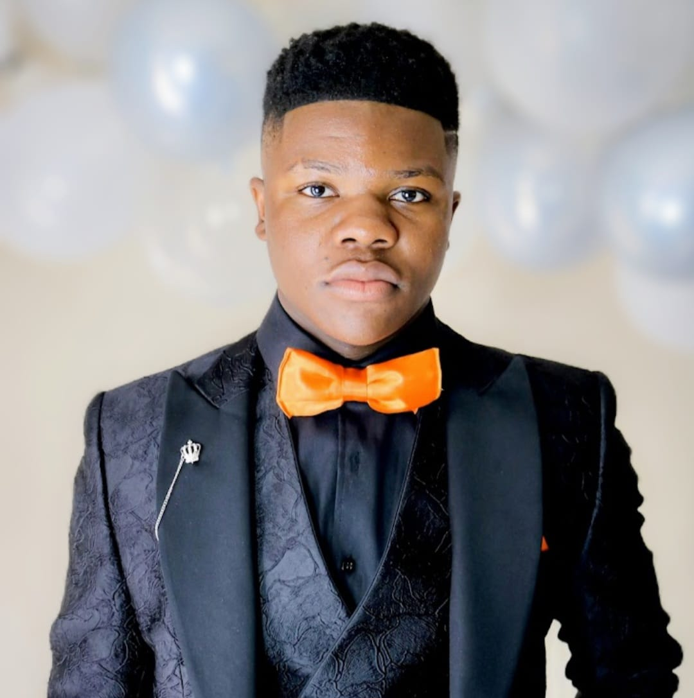

Upcoming Web Developer & Dreamer of code
Salutations! I'm a passionate upcoming web developer who loves to transform ideas into digital experiences. With my new knowledge about the background in Computer Science and a flair for creativity, I strive to create beautiful and functional websites whenever I CAN. Creating visual masterpieces one pixel at a time. Resourceful and dedicated matriculated High School student with excellent analytical skills and a demonstrated commitment to providing great customer service. I used to be Head-boy in High School where I led and worked with 32 prefects. Strong organizational abilities with proven successes managing multiple academic projects and volunteering events. Well-rounded and professional team player dedicated to continuing academic pursuits at a collegiate level
Outside of coding, you'll find me exploring new technologies, sipping on some sprite, the cold beverage, and dreaming about the future of the web and software engineering.
Name: Dan-Clinton Mukadi
Email: clintonmukadi12@gmail.com
LinkedIn: Your LinkedIn Profile
Degree: Graduated high school with a bachelor's degree pass for my NSC.
Top 20 learner for 3 years, Head-Boy, Vice Captain of Rugby team.
School: Hoerskool Roodepoort/
Year: 2022
Junior Manager
Just Bags and Accessories
Jan 2020 - Present
Specialize in overseeing the process of manufacturing bags in bulk. I work in the labor department, managing a small group of people. Making sure deadlines given were met. Restocking inventory when needed. Dealing with customers when needed.